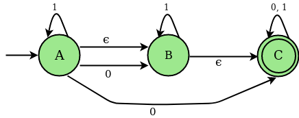

非决定性有限自动机（NFA）： NFA是一个有限自动机，对于某些情况，当单个输入被赋予单个状态时，机器会进入多于1个状态，即一些运动不能由现在唯一确定状态和当前输入符号。
An NFA can be represented as M = { Q, ∑, ∂, q0, F} Q→有限非空状态集。
Σ→有限的非空输入符号集。
∂→过渡功能。
q0→开始状态。
F→最终状态
NFA与（null）或∈move：如果任何有限自动机包含ε（null）移动或事务，则该有限自动机称为NFA，其中∈移动
示例：
考虑下面的NFA图，其中∈move：

上述NFA的过渡状态表
| 状态 | 0 | 1 | 小量 |
|---|---|---|---|
| 一个 | B，C | 一个 | 乙 |
| 乙 | - | 乙 | C |
| C | C | C | - |
Epsilon（ε） - 闭包：给定状态X的Epsilon闭包是一组状态，可以从状态X到达，只有（null）或ε移动，包括状态X本身。 换句话说，状态的ε-闭合可以通过以递归方式从单个ε移动从X到达的状态的ε-闭合的并集操作来获得。
对于上面的例子，∈闭包如下：
∈ closure(A) : {A, B, C} ∈ closure(B) : {B, C} ∈ closure(C) : {C}
确定性有限自动机（DFA）： DFA是一种有限自动机，其中，对于所有情况，当单个输入被赋予单个状态时，机器进入单个状态，即，机器的所有运动可以由唯一确定的当前状态和当前输入符号。
将ε-move转换为DFA的步骤：
步骤1：取∈闭包，将NFA的开始状态作为DFA的开始状态。
步骤2：找到每个输入符号可以从当前遍历的状态
（过渡价值的联合及其在当前DFA状态下的每个NFA状态的关闭）。步骤3：如果发现任何新状态，请将其作为当前状态并重复步骤2。
步骤4：重复步骤2和步骤3，直到DFA转换表中没有新状态。
步骤5：将包含NFA最终状态的DFA状态标记为DFA的最终状态。
与上述NFA对应的DFA的过渡状态表
| 状态 | 0 | 1 |
|---|---|---|
| A，B，C | B，C | A，B，C |
| B，C | C | B，C |
| C | C | C |
DFA状态图 
例子 ：
Input : 6 2 FC - BF - C - - - D EA - A - BF - - - Output : STATES OF NFA : A, B, C, D, E, F, GIVEN SYMBOLS FOR NFA: 0, 1, eps NFA STATE TRANSITION TABLE STATES |0 |1 eps --------+------------------------------------ A |FC |- |BF B |- |C |- C |- |- |DD |E |A |- E |A |- |BF F |- |- |- e-Closure (A) : ABF e-Closure (B) : B e-Closure (C) : CD e-Closure (D) : D e-Closure (E) : BEF e-Closure (F) : F ******************************************************** DFA TRANSITION STATE TABLE STATES OF DFA : ABF, CDF, CD, BEF, GIVEN SYMBOLS FOR DFA: 0, 1, STATES |0 |1 --------+----------------------- ABF |CDF |CD CDF |BEF |ABF CD |BEF |ABF BEF |ABF |CD Input : 9 2 - - BH - - CE D - - - - G - F - - - G - - BH I - - - - - Output : STATES OF NFA : A, B, C, D, E, F, G, H, I, GIVEN SYMBOLS FOR NFA: 0, 1, eps NFA STATE TRANSITION TABLE STATES |0 |1 eps --------+------------------------------------ A |- |- |BH B |- |- |CE C |D |- |- D |- |- |GE |- |F |- F |- |- |GG |- |- |BH H |I |- |- I |- |- |- e-Closure (A) : ABCEH e-Closure (B) : BCE e-Closure (C) : C e-Closure (D) : BCDEGH e-Closure (E) : E e-Closure (F) : BCEFGH e-Closure (G) : BCEGH e-Closure (H) : H e-Closure (I) : I ******************************************************** DFA TRANSITION STATE TABLE STATES OF DFA : ABCEH, BCDEGHI, BCEFGH, GIVEN SYMBOLS FOR DFA: 0, 1, STATES |0 |1 --------+----------------------- ABCEH |BCDEGHI |BCEFGH BCDEGHI |BCDEGHI |BCEFGH BCEFGH |BCDEGHI |BCEFGH
说明：
输入的第一行包含NFA的状态数（ N ）。 输入的第二行表示输入符号的数量（ S ）。 在示例1中，NFA的状态数是6，即（ A，B，C，D，E，F ）和2个输入符号，即（ 0,1 ）。 由于我们使用∈move来处理NFA，因此将添加∈作为额外的输入符号。 接下来的N行包含每个NFA状态的转换值。 第i行，第j列的值表示第j个输入符号上的第i个状态的转换值。 这里是example1 转换（A，0）：FC 。
对于通过转换输入NFA获得的相应NFA和DFA的每个状态，输出包含NFA，ε闭包。 还指定了DFA的状态和输入符号。
以下是上述方法的实施：
// C Program to illustrate how to convert e-nfa to DFA
#include <stdio.h>
#include <stdlib.h>
#include <string.h>
#define MAX_LEN 100
char NFA_FILE[MAX_LEN];
char buffer[MAX_LEN];
int zz = 0;
// Structure to store DFA states and their
// status ( i.e new entry or already present)
struct DFA {
char *states;
int count;
} dfa;
int last_index = 0;
FILE *fp;
int symbols;
/* reset the hash map*/
void reset(int ar[], int size) {
int i;
// reset all the values of
// the mapping array to zero
for (i = 0; i < size; i++) {
ar[i] = 0;
}
}
// Check which States are present in the e-closure
/* map the states of NFA to a hash set*/
void check(int ar[], char S[]) {
int i, j;
// To parse the individual states of NFA
int len = strlen(S);
for (i = 0; i < len; i++) {
// Set hash map for the position
// of the states which is found
j = ((int)(S[i]) - 65);
ar[j]++;
}
}
// To find new Closure States
void state(int ar[], int size, char S[]) {
int j, k = 0;
// Combine multiple states of NFA
// to create new states of DFA
for (j = 0; j < size; j++) {
if (ar[j] != 0)
S[k++] = (char)(65 + j);
}
// mark the end of the state
S[k] = '\0';
}
// To pick the next closure from closure set
int closure(int ar[], int size) {
int i;
// check new closure is present or not
for (i = 0; i < size; i++) {
if (ar[i] == 1)
return i;
}
return (100);
}
// Check new DFA states can be
// entered in DFA table or not
int indexing(struct DFA *dfa) {
int i;
for (i = 0; i < last_index; i++) {
if (dfa[i].count == 0)
return 1;
}
return -1;
}
/* To Display epsilon closure*/
void Display_closure(int states, int closure_ar[],
char *closure_table[],
char *NFA_TABLE[][symbols + 1],
char *DFA_TABLE[][symbols]) {
int i;
for (i = 0; i < states; i++) {
reset(closure_ar, states);
closure_ar[i] = 2;
// to neglect blank entry
if (strcmp(&NFA_TABLE[i][symbols], "-") != 0) {
// copy the NFA transition state to buffer
strcpy(buffer, &NFA_TABLE[i][symbols]);
check(closure_ar, buffer);
int z = closure(closure_ar, states);
// till closure get completely saturated
while (z != 100)
{
if (strcmp(&NFA_TABLE[z][symbols], "-") != 0) {
strcpy(buffer, &NFA_TABLE[z][symbols]);
// call the check function
check(closure_ar, buffer);
}
closure_ar[z]++;
z = closure(closure_ar, states);
}
}
// print the e closure for every states of NFA
printf("\n e-Closure (%c) :\t", (char)(65 + i));
bzero((void *)buffer, MAX_LEN);
state(closure_ar, states, buffer);
strcpy(&closure_table[i], buffer);
printf("%s\n", &closure_table[i]);
}
}
/* To check New States in DFA */
int new_states(struct DFA *dfa, char S[]) {
int i;
// To check the current state is already
// being used as a DFA state or not in
// DFA transition table
for (i = 0; i < last_index; i++) {
if (strcmp(&dfa[i].states, S) == 0)
return 0;
}
// push the new
strcpy(&dfa[last_index++].states, S);
// set the count for new states entered
// to zero
dfa[last_index - 1].count = 0;
return 1;
}
// Transition function from NFA to DFA
// (generally union of closure operation )
void trans(char S[], int M, char *clsr_t[], int st,
char *NFT[][symbols + 1], char TB[]) {
int len = strlen(S);
int i, j, k, g;
int arr[st];
int sz;
reset(arr, st);
char temp[MAX_LEN], temp2[MAX_LEN];
char *buff;
// Transition function from NFA to DFA
for (i = 0; i < len; i++) {
j = ((int)(S[i] - 65));
strcpy(temp, &NFT[j][M]);
if (strcmp(temp, "-") != 0) {
sz = strlen(temp);
g = 0;
while (g < sz) {
k = ((int)(temp[g] - 65));
strcpy(temp2, &clsr_t[k]);
check(arr, temp2);
g++;
}
}
}
bzero((void *)temp, MAX_LEN);
state(arr, st, temp);
if (temp[0] != '\0') {
strcpy(TB, temp);
} else
strcpy(TB, "-");
}
/* Display DFA transition state table*/
void Display_DFA(int last_index, struct DFA *dfa_states,
char *DFA_TABLE[][symbols]) {
int i, j;
printf("\n\n********************************************************\n\n");
printf("\t\t DFA TRANSITION STATE TABLE \t\t \n\n");
printf("\n STATES OF DFA :\t\t");
for (i = 1; i < last_index; i++)
printf("%s, ", &dfa_states[i].states);
printf("\n");
printf("\n GIVEN SYMBOLS FOR DFA: \t");
for (i = 0; i < symbols; i++)
printf("%d, ", i);
printf("\n\n");
printf("STATES\t");
for (i = 0; i < symbols; i++)
printf("|%d\t", i);
printf("\n");
// display the DFA transition state table
printf("--------+-----------------------\n");
for (i = 0; i < zz; i++) {
printf("%s\t", &dfa_states[i + 1].states);
for (j = 0; j < symbols; j++) {
printf("|%s \t", &DFA_TABLE[i][j]);
}
printf("\n");
}
}
// Driver Code
int main() {
int i, j, states;
char T_buf[MAX_LEN];
// creating an array dfa structures
struct DFA *dfa_states = malloc(MAX_LEN * (sizeof(dfa)));
states = 6, symbols = 2;
printf("\n STATES OF NFA :\t\t");
for (i = 0; i < states; i++)
printf("%c, ", (char)(65 + i));
printf("\n");
printf("\n GIVEN SYMBOLS FOR NFA: \t");
for (i = 0; i < symbols; i++)
printf("%d, ", i);
printf("eps");
printf("\n\n");
char *NFA_TABLE[states][symbols + 1];
// Hard coded input for NFA table
char *DFA_TABLE[MAX_LEN][symbols];
strcpy(&NFA_TABLE[0][0], "FC");
strcpy(&NFA_TABLE[0][1], "-");
strcpy(&NFA_TABLE[0][2], "BF");
strcpy(&NFA_TABLE[1][0], "-");
strcpy(&NFA_TABLE[1][1], "C");
strcpy(&NFA_TABLE[1][2], "-");
strcpy(&NFA_TABLE[2][0], "-");
strcpy(&NFA_TABLE[2][1], "-");
strcpy(&NFA_TABLE[2][2], "D");
strcpy(&NFA_TABLE[3][0], "E");
strcpy(&NFA_TABLE[3][1], "A");
strcpy(&NFA_TABLE[3][2], "-");
strcpy(&NFA_TABLE[4][0], "A");
strcpy(&NFA_TABLE[4][1], "-");
strcpy(&NFA_TABLE[4][2], "BF");
strcpy(&NFA_TABLE[5][0], "-");
strcpy(&NFA_TABLE[5][1], "-");
strcpy(&NFA_TABLE[5][2], "-");
printf("\n NFA STATE TRANSITION TABLE \n\n\n");
printf("STATES\t");
for (i = 0; i < symbols; i++)
printf("|%d\t", i);
printf("eps\n");
// Displaying the matrix of NFA transition table
printf("--------+------------------------------------\n");
for (i = 0; i < states; i++) {
printf("%c\t", (char)(65 + i));
for (j = 0; j <= symbols; j++) {
printf("|%s \t", &NFA_TABLE[i][j]);
}
printf("\n");
}
int closure_ar[states];
char *closure_table[states];
Display_closure(states, closure_ar, closure_table, NFA_TABLE, DFA_TABLE);
strcpy(&dfa_states[last_index++].states, "-");
dfa_states[last_index - 1].count = 1;
bzero((void *)buffer, MAX_LEN);
strcpy(buffer, &closure_table[0]);
strcpy(&dfa_states[last_index++].states, buffer);
int Sm = 1, ind = 1;
int start_index = 1;
// Filling up the DFA table with transition values
// Till new states can be entered in DFA table
while (ind != -1) {
dfa_states[start_index].count = 1;
Sm = 0;
for (i = 0; i < symbols; i++) {
trans(buffer, i, closure_table, states, NFA_TABLE, T_buf);
// storing the new DFA state in buffer
strcpy(&DFA_TABLE[zz][i], T_buf);
// parameter to control new states
Sm = Sm + new_states(dfa_states, T_buf);
}
ind = indexing(dfa_states);
if (ind != -1)
strcpy(buffer, &dfa_states[++start_index].states);
zz++;
}
// display the DFA TABLE
Display_DFA(last_index, dfa_states, DFA_TABLE);
return 0;
}
使用NFA和∈move：如果我们想构建一个接受语言的FA，有时候构建直接NFA或DFA变得非常困难或者似乎是不可能的。 但是如果使用具有∈移动的NFA，则可以容易地构造和描述过渡图。